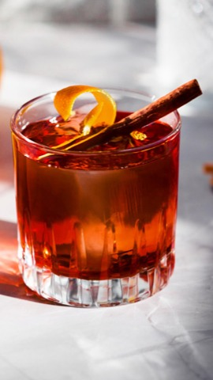

Tintin on the Rocks, un rincón dedicado al arte de la coctelería.
Aquí comparto recetas clásicas y de autor, técnicas de preparación, secretos de barra
y toda la inspiración para que disfrutes del mundo del bartender.
Explorá una creación original de autor.
Top Mixes
Sangre de Cazador
60 ml de Jägermeister
30 ml de jugo de limón
10 ml de almíbar de cerezas
10 ml de almíbar de menta
Se agregan todos los ingredientes a la coctelera, con mucho hielo y se cuela en una copa full ice, se decora con un penacho de menta y una frambuesa.
Un cóctel refrescante con un toque herbal y un color que enamora.
Este trago formo parte de la carta en Montauk, el parador de The Grand Hotel, Punta del Este; En la temporada 2024-2025.
Barbie Tropical Dream
60 ml de Malibu
30 ml de almibar de frutos rojos
10 ml de almíbar de cerezas
1 lima en trozos
10ml de crema de leche
Maceras la lima en una coctelera para luego agregar el resto de ingredientes y shakear con intensidad
Un cóctel cremoso que es ideal para tomar en verano.
Este trago formo parte de la carta en el Chiringuito del The Grand Hotel, Punta del Este; En la temporada 2024-2025.
Mercury Cougar 1967
60 ml de Aperol
30 ml de jugo de limón
30 ml de Jugo de naranja y zanahoria
20 ml de almíbar de menta
Se agregan todos los ingredientes a la coctelera, con mucho hielo y se cuela en una copa full ice, se decora con un penacho de romero y una cascara de naranja.
Una receta con aroma único que combina de manera balanceada y perfecta las notas de la naranja y zanahoria con el Aperol.
Este trago formo parte de la carta en By Mora Sushi, Punta del Este; En el invierno del 2024.
Black Negroni
30 ml de Gin
30 ml de Campari macerado en Canela
30 ml de Vermouth Rosso
10 ml de Licor de Cafe
Se agregan los ingredientes a un vaso mezclador, se integran y enfrian para despues colar en un vaso old fashioned con hielo seco, se decora con una rodaja de naranja y canela.
Una reversion del negroni con un matiz especiado que otorga calidez.

Este trago formo parte de la carta en Montauk, el parador de The Grand Hotel, Punta del Este; En la temporada 2024-2025.
Sobre mi
Soy Agustín, un bartender uruguayo en alza con pasión por crear mezclas únicas y compartirlas con el mundo.
Una recopilacion de momentos trabajando en diferentes bares.
Descargá mi CV para conocer más sobre mi trayectoria y habilidades.